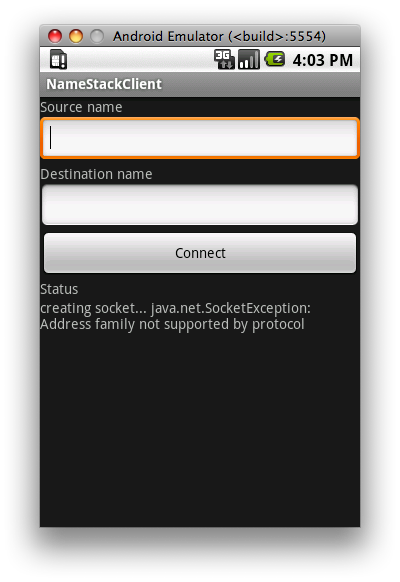

Setting the source name is optional. The destination name is one that should be resolvable by the phone. Since the prototype currently doesn't do DNS updates, this is a challenge, which you can work around in one of two ways:
I don't describe how to get the prototype running on the emulator, because the emulator "machine" doesn't support IPv6. It's possible to run an IPv6-enabled kernel on the emulator, but it'll never receive IPv6 packets as a result of the emulator's lack of IPv6 support. It may be useful to develop and test on the emulator, using IPv4 only, using similar steps, but how to do so I leave up to you.
First off, you're going to have to apply the patches for version 2.6.25 of the kernel. Assuming you're in the top-level kernel source tree for the dream phone, /Volumes/android/kernel-msm/msm, and the kernel patches are in ~/patches/kernel,
$ git am ~/patches/kernel/2.6.25/*Next apply the common kernel patches:
$ git am ~/patches/kernel/common/*Next apply the patches that allow the namestack directory to be built.
$ git am ~/patches/kernel/android/2.6.25/*Finally, apply the patches that actually comprise the name-oriented stack:
$ git am ~/patches/kernel/android/*Now the kernel source is ready to be built. Edit the .config file to add the line:
CONFIG_NAMESTACK=yand build the kernel with:
$ ARCH=arm CROSS_COMPILE=arm-eabi- makeIf all is well, you'll get a new kernel in arch/arm/boot/zImage. Combine it with a ramdisk to produce a new boot image like you did before:
$ mkbootimg --kernel arch/arm/boot/zImage \ --ramdisk /path/to/boot.img-ramdisk.gz --cmdline 'no_console_suspend=1 console=null' -o boot-2.6.25-name.imgI gave this boot image a different name than the old one just to keep them separate.
You'll also need to rebuild and install the Wi-Fi driver on the phone in the same way you did before.
Finally, reboot the phone, holding down the camera and power buttons when it starts up again to boot it in fastboot mode, and use the fastboot tool to boot your new image:
$ fastboot boot boot-2.6.25-name.imgIf your phone starts and you're able to use the Wi-Fi interface with it, your kernel is now ready to run the prototype applications.
$ sudo port install apache-ant
and on Ubuntu with apt-get, or Fedora with yum.
Once both the SDK and NDK are installed, create a directory to store the Java portion of the daemon. Change to the NDK directory, and create a subdirectory named apps/namestackd, and apply the patches to create the application. You'll recognize this pattern:
$ mkdir apps/namestackd $ cd apps/namestackd $ git init $ touch .gitignore $ git add .gitignore $ git commit .gitignore $ git tag origin $ git am ~/patches/android/namestackd/*The first patch creates a fairly large directory structure and a lot of files, but it's all boilerplate. You could also have created the same files yourself using the android tool that's in the SDK by running:
$ <sdk>/tools/android create project --target 1 \
--path <ndk>/apps/namestackd/project --activity namestackd \
--package com.ericsson.namestackd
Where <sdk> is the location of your android SDK, and <ndk> is
the locaion of your android NDK.
The second patch adds the Java portion of the implementation, which is pretty small. The bulk of the code is in the C source, which is shared with the Linux prototype. You'll make that next.
Change back to the NDK directory, make the directory for the daemon's C source, and apply the patches that comprise the daemon. You'll need to create a subdirectory of the ndk's sources directory named namestackd, initialize git in it, and apply the patches. Here's the familiar pattern again:
$ mkdir sources/namestackd $ cd sources/namestackd $ git init $ touch .gitignore $ git add .gitignore $ git commit .gitignore $ git tag origin $ git am ~/patches/namestackd/*Now make the shared library for the daemon:
$ make APP=namestackd
Then change to the app's project directory, and use ant to build it:
$ cd apps/namestackd/project
$ ant debug
If everything went well, you should see a couple lines like the following
at the end of the output:
BUILD SUCCESSFUL Total time: 3 secondsThen install the daemon on the phone using:
$ adb install <ndk>/apps/namestackd/project/bin/namestackd-debug.apk
Again, change to the NDK directory, and create a directory for the Java portion of the client, initialize git in it, and apply the patches that create it:
$ mkdir apps/NameStackClient $ cd apps/NameStackClient $ git init $ touch .gitignore $ git add .gitignore $ git commit .gitignore $ git tag origin $ git am ~/patches/android/NameStackClient/app/*Again, the first commit is just boilerplate, which you could have created using:
$ <sdk>/tools/android create project --target 1 \
--path <ndk>/apps/NameStackClient/project \
--activity NameStackClient --package com.ericsson.namestack
Change back to the NDK directory, and make the directory that contains the shared library for the client:
$ mkdir sources/NameStackClient $ cd sources/NameStackClient $ git init $ touch .gitignore $ git add .gitignore $ git commit .gitignore $ git tag origin $ git am ~/patches/android/NameStackClient/lib/*Then change back to the NDK directory, and build the shared library for the client:
$ cd ../..
$ make APP=NameStackClient
Change to the app's project directory, and use ant to build it:
$ cd apps/NameStackClient/project
$ ant debug
Then install the client on the phone using:
$ adb install <ndk>/apps/NameStackClient/project/bin/NameStackClient-debug.apk
You should now see a new application on the phone, NameStackClient:

Clicking on the application should show the following screen:
Setting the source name is optional. The destination name is one that
should be resolvable by the phone. Since the prototype currently doesn't
do DNS updates, this is a challenge, which you can work around in one of
two ways:
So, for example, if the IPv6 address of the server is fe80::a00:27ff:fe00:b260, and you want to start the server up to listen to name test on port 5000, start it up as follows:
$ ./namestackserver -p 5000 test.\\[xfe800000000000000a0027fffe00b260].ip6.arpa.
Then, on the client, use the same name as the destination name on the
android application:
test.\[xfe800000000000000a0027fffe00b260].ip6.arpa.
Note you don't need the double backslash on the android client, since
you're not interacting with a shell.
Similarly, if the IPv4 address of the server is 10.0.1.1, and you want it to listen for name test on port 5000, start it up as follows:
$ ./namestackserver -p 5000 test.1.1.0.10.in-addr.arpa.
Again, on the client, use the same name as the destination name on the
android application:
test.1.1.0.10.in-addr.arpa.
Once your server is set up correctly, and you've typed its name into the
destination name field on the phone, click Connect. You should see
messages about creating a socket and sending and receiving a message.
If instead you see an error about the address family not being supported:

You're not running the modified kernel. Otherwise,
congratulations! You've successfully built and run the prototype Linux
and android implementations.
Back to 5.3. Compiling and running the android
kernel on the development phone.
Top